玛丽向托勒牧师求助，因为自己的丈夫迈克尔有强烈的自杀倾向。
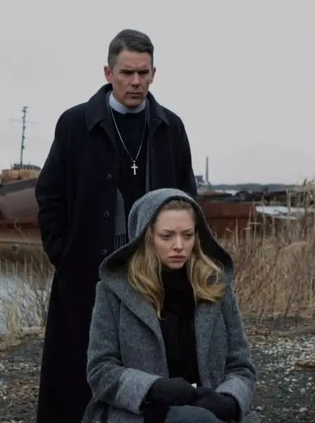
△ 托勒牧师与玛丽
迈克尔是一个极端环保主义者，他对利欲熏心的企业、冷眼漠视的政府以及日益恶化的环境污染感到绝望。
他认为人类对大自然的破坏已经不可逆转。
因此，他甚至宁愿要让妻子堕胎，也不愿意让自己的孩子出生在这个糟糕的世界中。
托勒牧师尽自己所能帮助迈克尔，并和他约定要定期见面。
没有想到，两人只见了一次面，迈克尔却开枪自杀了。
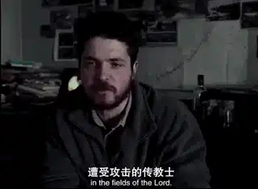
△ 迈克尔
保罗·施拉德的新作《第一归正会》是一部相当沉重的作品。
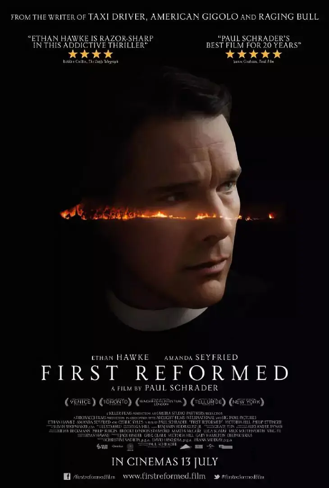
某种程度上，也是“浪子”保罗·施拉德游荡多年后重新正视信仰的作品。
从电影诞生起，这门光影艺术既可以忠实地记录人类的世界，又可以创造出一个又一个令人心醉痴迷的梦幻。
同时，电影更成为无数电影大师表达和探寻信仰的重要媒介。
从卡尔·德莱叶《圣女贞德》刚强壮胆的修女，再到布列松的《乡村牧师日记》软弱无力的神父。
从英格玛.伯格曼《处女泉》、《冬日之光》、《假面》中的神之沉默，再到塔尔科夫斯基《潜行者》、《乡愁》、《牺牲》中孤独前行的圣愚。
从梅尔吉布森《耶稣受难记》、《血战钢锯岭》充满力量的“十字架”，再到李沧东《密阳》、《生命之诗》苍白无力的信仰。
从基耶斯洛夫斯基《十诫》中的道德焦虑，再到泰伦斯马利克《生命之树》的永恒表达。
“十字架”始终是光影世界中重要的主题和精神表达。
基督教在西方世界中的重要性不言而喻，除了以上这些一直专注在信仰和精神世界的大师。
还有一些人则是“浪子回头”类型的导演。
比如说马丁.斯科塞斯，他曾说他的一生只有两件事：电影和宗教。
年轻时他深受基督教的影响，甚至差点成为牧师。
后来走上电影之路后，虽然他的作品中有救赎，但离真正信仰意义上的救赎还很远，甚至他拍过被宗教界批评的亵渎之作《基督最后的诱惑》。
但是信仰依旧在马丁.斯科塞斯的生命中占有重要一席，他曾坦言，坐飞机时，他会不禁祈祷。
当他走过人生大部分的岁月后，马丁.斯科塞斯重新归回到严肃信仰中，他去年的作品《沉默》带给人们极大的震撼和思考。

有意思的是，马丁.斯科塞斯的重要合作伙伴保罗·施拉德也是如此。
施拉德出生在一个改革宗家庭，从小父母对他要求很严格，直到17岁时他才看到第一部电影。
后来，施拉德在加尔文大学主修文学，同时也辅修了神学课程。
毕业后，机缘巧合之下，施拉德进入了电影行业。
之后施拉德凭剧本《愤怒的公牛》而大获成功。
此后，他与马丁斯卡塞斯陆续合作了《出租车司机》、《穿梭阴阳界》等经典电影。
这些作品中的主角往往都是行走在绝望边缘的独行侠，最后都通过自我毁灭或者破坏实现自我救赎。
里面看不到从信仰而来的安慰和喜乐。
△ 施拉德
像马丁.斯科塞斯一样，年过七十的施拉德拍摄了这部《第一归正会》。
名字的灵感直接来自于他的童年经历，归正会也就是加尔文主义，正是他父母所信仰的宗教支派。
同时，这部电影也是他对卡尔.德莱叶、小津安二郎以及罗伯特.布列松的致敬。
他曾在多年以前针对这三位导演就写过一本备受好评的书《电影中的超越风格》。
因此，童年经历、“流浪”的生涯、导演致敬都奠定了本片的沉重基调。
4:3的画幅、固定机位的长镜头、严肃深刻的对话和故事情节让本片有别于一般的好莱坞大片。
这是一部充满诚意的个人之作。
托勒牧师的设定很像《乡村牧师日记》中年轻的神父。
他们都经历着身体、心灵的巨大软弱。
他们都患有胃病，但却都不加节制地喝着酒、吃着面包让自己的身体雪上加霜。
△ 本片主演伊桑·霍克曾出演著名的“爱在”三部曲
他们所在的地方都充满着信仰的荒芜和伪善，《乡村牧师日记》中没有人真正需要神父，他们常常只是走个过场。
本片中有着悠久历史、明亮敞宽的教会稀稀疏疏坐着几个人。
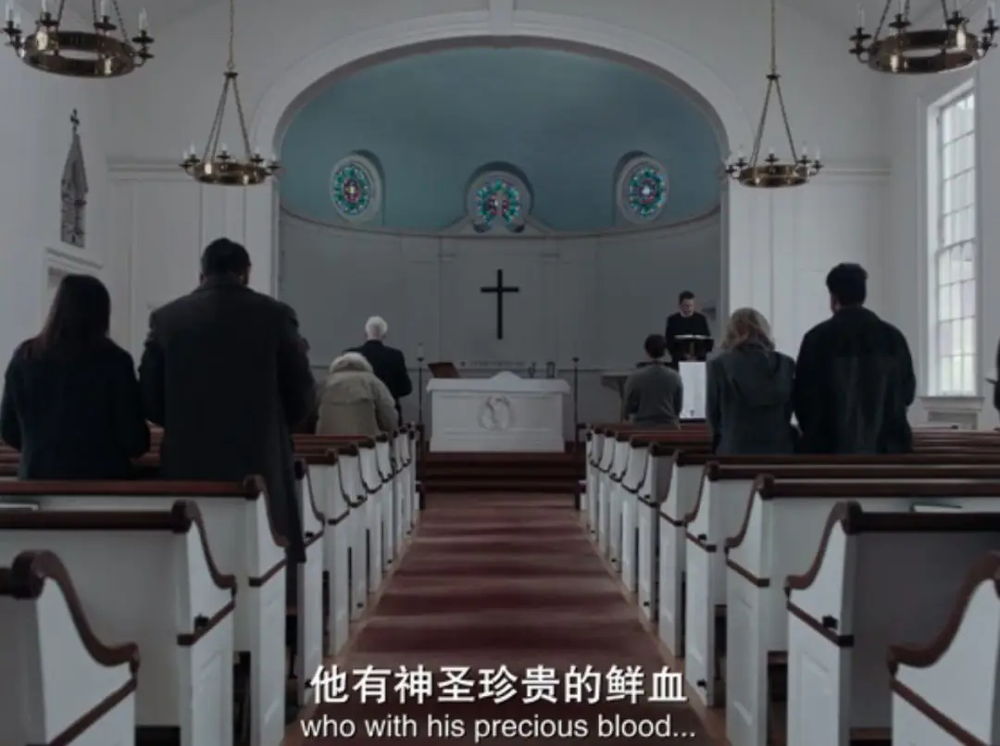
托勒牧师更是一个身陷绝望中的牧师。
他曾是军中牧师，后来他让儿子参军，不幸的是，儿子在伊拉克战争中牺牲，妻子也因此离开了他。
儿子去世、婚姻失败，这些都让托勒牧师对自己的人生绝望。
他和《乡村牧师日记》中的神父一样，用写日记的方式记录着自己真实的软弱和抱怨。
甚至，写日记成为他们祈祷的唯一方式。
因为开口祷告对于身处绝望中的他们来说非常困难，只能在奋笔疾书中一边宣泄着自己的情绪，一边向上帝祈祷。
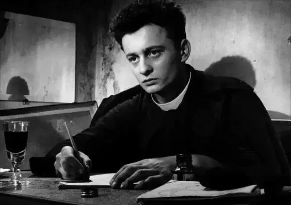
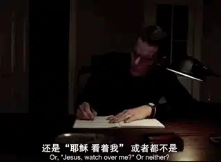
当这样一个绝望的人要去辅导另一个绝望的人时。
迈克尔的每一个疑问、每一个眼神对托勒而言都是一种煎熬。
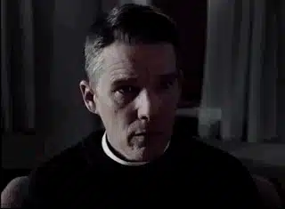
托勒克制着自己的软弱，竭力想要将迈克尔从绝望中拉出来。
他告诉迈克尔应该心存希望，人类总能够在死气沉沉的夜晚中惊醒。
托勒甚至很有智慧地阻止迈克尔让妻子堕胎，告诉他：
“玛丽体内有东西在生长，就像树苗，就像濒危物种，兼具大自然的美丽和神秘，不论多么绝望，与失去孩子相比都不值一提”。
托勒的开导很真诚，也很智慧，虽然没能挽救迈克尔，但从迈克尔留给托勒留下的遗嘱来看。
迈克尔信任这位牧师。
当一个绝望的人看着另一个绝望的人坠入深渊的时候。
他惧怕深渊，但又会不自觉地走向深渊。
迈克尔的疑问、迈克尔的遗物、以及迈克尔幻灭的理想时常萦绕在托勒的脑海中。
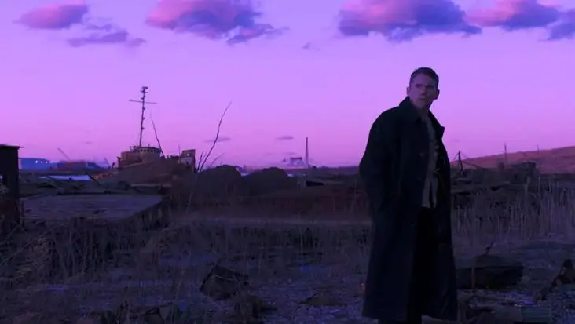
在托勒的思想中，同时包含着两种相互冲突的真相：希望和绝望。
绝望要分两种。
对他人绝望，是骄傲的升华，即否认上帝的主权和创造，认为这个糟糕的世界就连上帝也无法拯救。
另一种就是对自己绝望，这种绝望可能会带来真正的希望，可能将你带到上帝的面前，但也可能让你走向自我毁灭。
托勒认为自己的一生是失败的，他沉浸在自我的绝望中，但却无法祷告，无法仰望。
他拒绝别人走近自己，他拒绝唱诗班的班长帮助自己。
托勒的身上两种绝望都有，所以他缠绕其中，无法祈祷。
当他最后发现上级长老的虚伪时，托勒就连继续坚持抓住恩典的手也松开了。
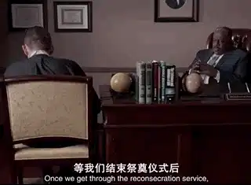
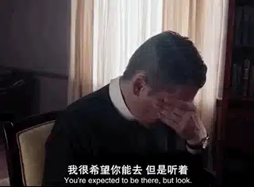
他变成了另一个迈克尔。
他彻底对自己、对长老、对现在的教会绝望了，迈克尔的疑问成为了托勒的疑问，他在教堂外的白板上贴出“上帝是否会原谅我们”，来质问自己和所有人。
当人类用贪婪和邪恶破坏着上帝的创造时，上帝是否会原谅我们！
当政府睁着眼睛说瞎话的时候，上帝是否会原谅我们！
当教会打着恩典的旗号在罪恶面前沉默的时候，上帝是否会原谅我们！
当教会不但不代表上帝发声，竟然为了权贵发声的时候，上帝是否会原谅我们！
托勒等不及上帝临到，他决心要代替上帝审判身边的罪恶，他用《启示录》的话语为自己的行动正名：
“外邦发怒，你的忿怒也临到了，审判死人的时候也到了；你的仆人众先知和众圣徒，凡敬畏你名的人，连大带小得赏赐的时候也到了；你败坏那些败坏世界之人的时候也就到了。”
愤怒的托勒牧师非但没有守住自己微弱如烛光的信仰，反而在帮助别人中加速了自己的湮没。
这部电影的确很压抑。
唯一给托勒光亮的是玛丽。
她和托勒一样失去了自己的亲人，所以能够走近彼此，电影中有一个超现实的镜头，托勒和玛丽贴在一起躺在地板上。
忽然，二人腾空而起进行了漫长的幻游，他们漫游经过美丽的宇宙、海洋和大山，这些都是上帝看为好的创造。
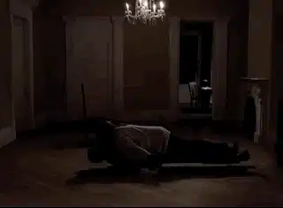
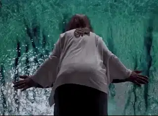
忽然，他们又漫游在充满着垃圾、污染、焚烧的荒败景象中。
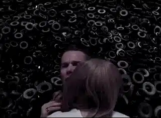
导演借着这个镜头既刻画了托勒和玛丽之间异乎寻常的关系，又表现了托勒对于迈克尔环保理想的认可。
保存上帝的创造本身也是敬畏上帝的一种方式。
这个镜头也许借鉴了塔尔科夫斯基《牺牲》中的一个场景：女仆玛丽亚和绝望的男主在拥抱中腾空而起。
塔尔科夫斯基借着女仆的超自然能力给看不到希望的人类找到了希望和出路。
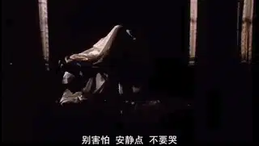
可是，施拉德的这个镜头虽然寓意深刻，但却是电影中的一个败笔。
用这样一个镜头来表现托勒的转变有些牵强，同时这个镜头与整个电影中严肃的现实主义风格不符，有些突兀。
这种突兀同样体现在电影结尾的处理上，走向自我毁灭的托勒最终被一个“人本”的拥抱拯救。
大费周章花了近两个小时的严肃和抑压，没有像伯格曼压抑到底，也没有像《乡村牧师日记》那样生腾出微弱的希望。
最后却用一个拥抱给情绪开了一道口子，但又不是真正的释放，有些不伦不类。
不过这部电影将环保问题摆在信仰面前，以及对于教会被边缘化成为没有立场只讲忍耐的沉默帮凶的提醒是非常重要的。
教会不同于建在深山中不问世事的寺庙，教会是建立在城市中，是要进入人群中代表上帝发声。
如果电影中教会按着真理坚守，托勒也许可以等到恩典临到的那一刻。
而走过死荫幽谷的托勒也才有真正的能力为绝望的人祷告，带领他们走出旷野和为奴之地！
对于72岁的施拉德而言，拍出这样的作品实属不易，也充满了勇气，我们不能苛求，但希望这个浪子能早日回头。
关注并回复：第一归正会
获取电影资源
这里没有挑逗你眼目情欲的小鲜肉
也没有挑动你肉体情欲的段子
更没有膨胀你今生骄傲的鸡血
我们只在乎那些最质朴真诚的作品
在那里我们才能恢复真正的想象力
我们也坚信这才是我们真正需要的

ID:Six_hundred_hits
长按二维码，一键关注
【六百击】
-END-
电影评论
尽情分享朋友圈

苹果打赏通道
小提示：文末广告是腾讯配送广告，内容与本号无关，但您的每次点击（无需反复点）都会给平台带来几毛收益，欢迎您点击支持六百击。